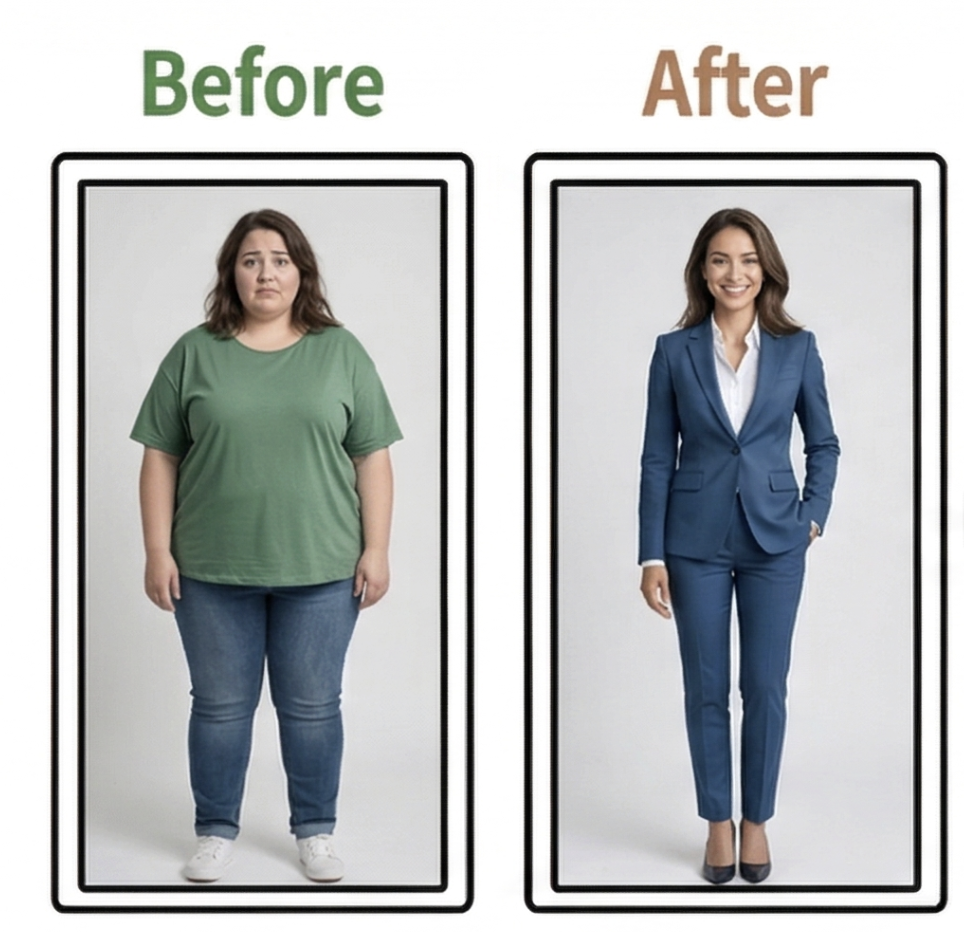
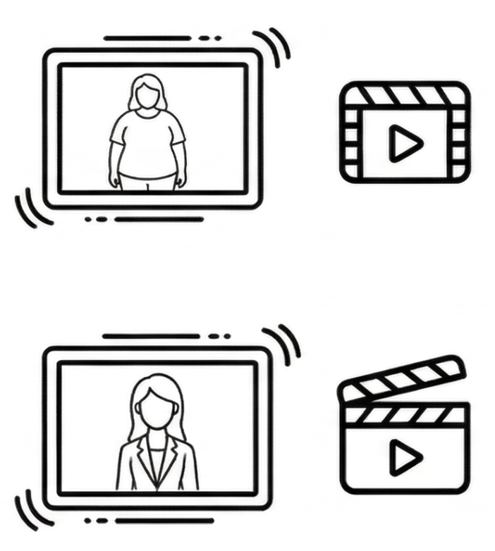
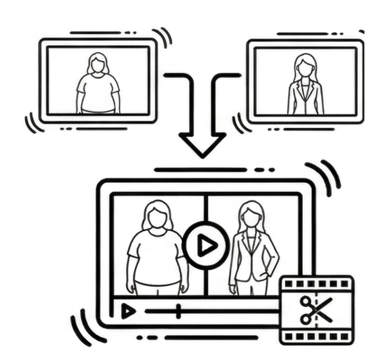
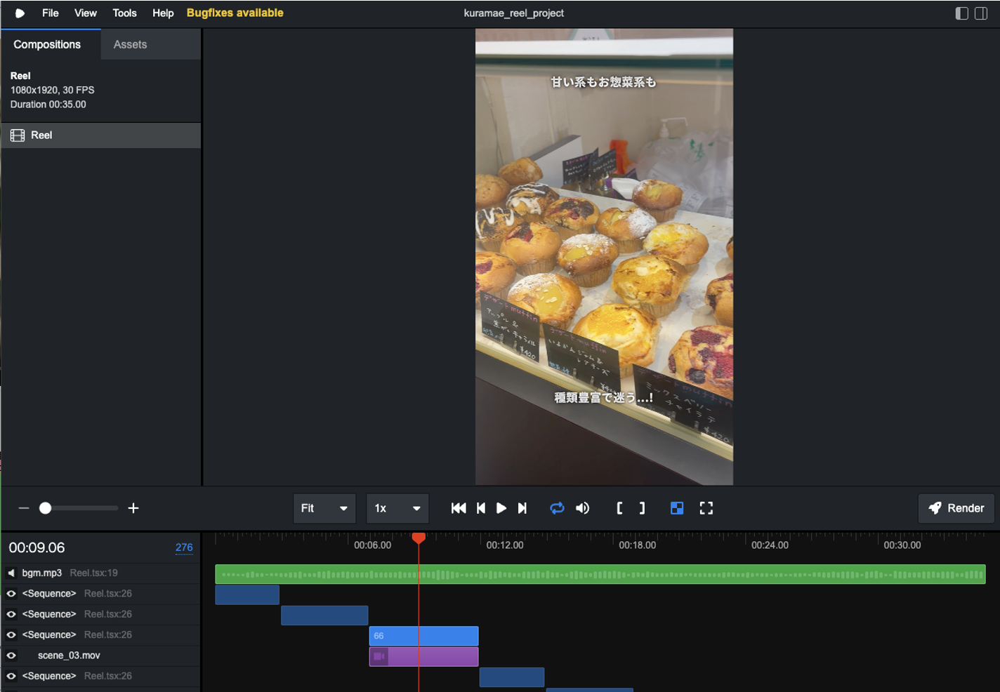
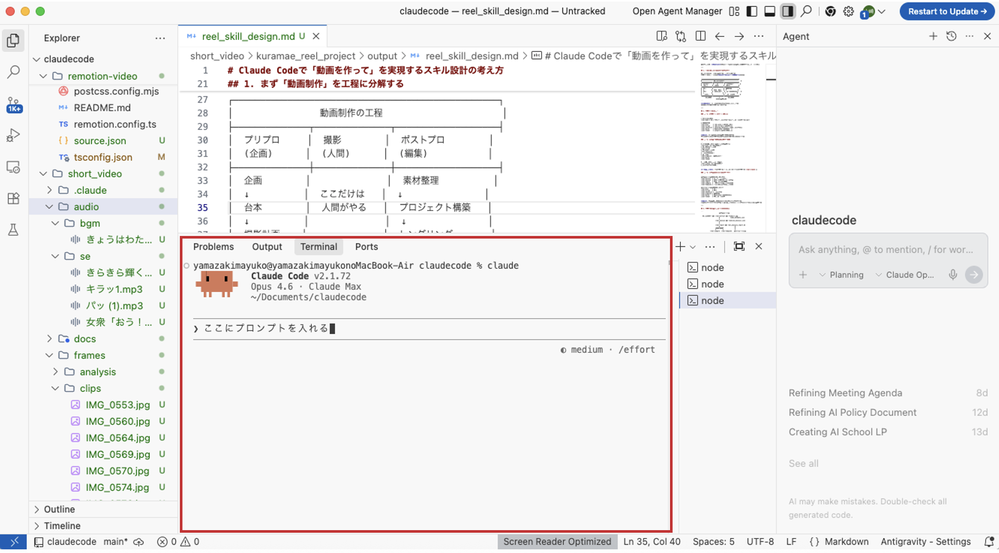

山崎真由子
健康関連業界にて営業・広報としてキャリアを積んだ後、インハウスデザイナーへ転身。データ分析に基づくWebサイトのUI/UX改善や、企業のコミュニケーション戦略の立案から実行までを一貫して手がける。
LIG、パーソルキャリア、AIスタートアップを経て、現在はフリーランスとして独立。AI・クリエイティブ・マーケティングを掛け合わせた領域で、企業支援および研修講師として活動している。
2026.04.16
動画生成AIの主要機能・クオリティUPのコツ・
プロンプトエンジニアリング・編集自動化・実務注意点
.jpg)
山崎真由子
健康関連業界にて営業・広報としてキャリアを積んだ後、インハウスデザイナーへ転身。データ分析に基づくWebサイトのUI/UX改善や、企業のコミュニケーション戦略の立案から実行までを一貫して手がける。
LIG、パーソルキャリア、AIスタートアップを経て、現在はフリーランスとして独立。AI・クリエイティブ・マーケティングを掛け合わせた領域で、企業支援および研修講師として活動している。
動画生成AIで今できること
全体像を理解し、
明日から使える状態になる
AI動画の主要機能を知る
| 機能 | 内容 | 主なツール |
|---|---|---|
| Text-to-Video | プロンプトから動画を生成 | Kling, Runway, Vidu, Sora, Veo等 |
| Image-to-Video | 静止画から動画を生成 | Kling, Runway, Vidu, Sora, Veo等 |
| フェイススワップ | 顔の差し替え、属性変更 | Akool, DomoAI等 |
| リップシンク | 音声に合わせて口元を動かす | DomoAI, HeyGen等 |
| AIリレイアウト | アスペクト比変換・背景拡張 | CapCut, Runway等 |
| ワークフロー | ワークフローを組んで動画生成 | TapNow, Kling Labo, Runway Workflow等 |
| 動画作成エージェント | 脚本〜生成まで一括自動化 | OiiOii, Vidu等 |
プロンプトから動画を生成する基本機能
テキストプロンプト
or 参照画像
動画生成AI
5〜10秒の動画出力
| ツール | 特徴 | 10秒あたり費用 |
|---|---|---|
| Kling | V3 / 1080p | 約 ¥250 |
| Runway | Gen-4.5 / 720p〜1080p | 約 ¥375 |
| Luma | Ray3.14 / 1080p | 約 ¥260 |
| Vidu | Q3-Pro / 1080p | 約 ¥225 |
| Sora | Sora 2 Pro / 1024p | 約 ¥750 |
| Veo | Veo 3.1 Standard / 1080p | 約 ¥600 |
※ 各ツール最上位モデルのAPI利用時（1ドル≒150円換算）。モデル・解像度により変動。最新情報は各公式サイトを確認
静止画から動画を生成（開始/終了フレーム指定）
開始 or 終了フレーム
画像を解析 → 動きを生成
画像の世界観を維持した動画
顔の差し替え、属性変更
差し替えたい顔を指定
顔を検出・差し替え → 自然に合成
1素材→複数パターン
元動画
変更したい顔写真
フェイススワップデモ動画（AKOOL）
Before
After
フェイススワップデモ動画（AKOOL）
Before
After
音声に合わせて人物の口元を動かす
人物素材と音声データ
顔検出→音声解析→口元生成
自然なリップシンク
音声データを読み込む
動画内の顔を認識
音声に合わせて
口の動きを生成
自然な動画として書き出し
アスペクト比変換・動画拡張・背景生成
Before
After
AIリレイアウトデモ動画（CapCut）
ワークフローを組んで動画生成
ワークフローデモ動画（TapNow）
脚本〜キャラクターデザイン〜生成まで、エージェントで作成する機能
エージェントデモ動画（OiiOii）
| 機能 | 内容 | 主なツール |
|---|---|---|
| Text-to-Video | プロンプトから動画を生成 | Kling, Runway, Vidu, Sora, Veo等 |
| Image-to-Video | 静止画から動画を生成 | Kling, Runway, Vidu, Sora, Veo等 |
| フェイススワップ | 顔の差し替え、属性変更 | Akool, DomoAI等 |
| リップシンク | 音声に合わせて口元を動かす | DomoAI, HeyGen等 |
| AIリレイアウト | アスペクト比変換・背景拡張 | CapCut, Runway等 |
| ワークフロー | ワークフローを組んで動画生成 | TapNow, Kling Labo, Runway Workflow等 |
| 動画作成エージェント | 脚本〜生成まで一括自動化 | OiiOii, Vidu等 |
クオリティ重視ならKlingかVidu。
その他は使いたい用途によって変わるので、
AIに聞きながらツール選定をするのがおすすめです。
プロンプトのコツ、
段階的生成アプローチ
動画生成のプロンプトは、以下の5つの要素を入れることを意識すると精度が上がります
| 要素 | 問い | 例 |
|---|---|---|
| 被写体 | 誰が・何が | 白いワンピースを着た20代の女性 |
| アクション | どう動くか | カメラに向かって微笑みながら髪をかきあげる |
| シーン・背景 | どこで | 朝日が差し込むカフェのテラス席 |
| スタイル | どんな雰囲気で | ナチュラルで柔らかいトーン、フィルム調 |
| カメラワーク | どう撮るか | ゆっくりズームイン、浅い被写界深度 |
Before ✕
女性がカフェにいる
After ○
白いワンピースの女性が、朝日の差し込むカフェのテラスで、コーヒーカップを両手で包みながら微笑む。フィルム調、ゆっくりズームイン
Before ✕
商品を紹介する動画
After ○
大理石のテーブルに置かれた化粧品ボトルに、窓からの自然光がゆっくり差し込む。クローズアップ、シネマティック、スローモーション
01
具体的な動作を指定する
例:「歩く」→「忍び足で進む」
02
映画用語でAIの表現力が変わる
例: カメラワーク、被写界深度
03
感情を視覚的な表現に置き換える
例:「嬉しい」→「小さく跳ねる」
画像生成AIで1枚作り、Image to Videoで動かす
狙い通りの
1枚を作成
画像をベースに
動画を生成
デモ: 画像生成→動画生成

画像生成AIでビフォーと
アフターの初期状態を作成

作成した画像を元に、Image-to-Video
AIでそれぞれ独立した動画を生成

生成した動画を編集ツール
（例: CapCut、Premiere）でつなぎ合わせる
3ステップで喋る人物動画を作る
ナレーション
音声を作成
話者の
画像を作成
画像＋音声を合成
→喋る人物動画
構成作成のための
プロンプトエンジニアリング
AIに「台本書いて」だけだと、ふわっとした台本しか出てこない。
まず素材を渡す → その上で型を指定する
この順番が大事。
AIは渡された情報の範囲でしか書けない。最低限これを入れる：
年齢・性別だけでなく悩み・状況まで具体的に
機能ではなくユーザーの生活がどう変わるか
数値実績・受賞・利用者の声など
媒体によってフックの勝負秒数が違う
ここが薄いと、どんなプロンプトを使ってもそれっぽいだけの台本になる
『動画広告"打ち手"大全』発の業界定番フレームワーク
Catch（つかみ）→ Appeal（ベネフィット提示）→ Motivate（信頼の証拠で後押し）→ Suggest（行動CTAで締める）
通販番組と同じ「悩み→解決→証拠→今すぐ」の流れ。15〜30秒の短尺に強い
Google公式推奨のYouTube広告フレームワーク
Attract（注意を引く）→ Brand（ブランドを見せる）→ Connect（ストーリーで共感）→ Direct（行動を促す）
CAMSとの違いはConnectパートでストーリー性を持たせる点。30〜60秒で世界観も伝えたいときに
→ 型を与えることで、AIの出力に「起承転結」が生まれる
AIが書くナレーションが硬いのは、書き言葉で出力するから。
プロンプトで以下を指定するだけで変わる。
| 指定すること | プロンプト例 |
|---|---|
| 口語にする | 友達に話すトーンで |
| 文字数で縛る | 1文25字以内 |
| ペルソナを設定 | 20代の美容好きの女性として話して |
| 感情→行動に変換 | 便利です → 3時間の作業が5分で終わる |
AIが出した台本は、そのままだと「広告っぽい」。
ショート動画は"オーガニック投稿"の温度感でないとスワイプされる。
3つの変換テクニック：
実際のショート動画の文字起こしを貼って「このトーンで書き換えて」
「〜を実現します」「そんなあなたにおすすめ」等のAIが出しがちな定型表現を禁止ワードに
1文25字以内を厳守させると、自然と話し言葉になる
構成案・ナレーション・トンマナ調整、ここまでの全要素を1つのプロンプトに統合したものがこちら。
あなたはショート動画広告専門のコピーライターです。
以下のワークフローに従って、台本を1本作成してください。
═══════════════════════════════════
STEP 1 ― ヒアリング
═══════════════════════════════════
下記の入力項目に未記入・不足があれば、台本作成の前に質問してすべて埋めること。
情報が十分そろっている場合はSTEP 2へ直接進むこと。
■ 広告の基本設定
・配信媒体（複数可）：[YouTube Shorts ／ TikTok ／ Instagram Reels ／ その他]
・広告の目的（1つ選択）：[LP誘導 ／ アプリDL ／ 来店促進 ／ ブランド認知 ／ その他]
・想定尺：[15秒 ／ 30秒 ／ 45秒 ／ 60秒]
■ 商品・サービス情報
・商品名／サービス名：
・ひとことで言うと（カテゴリ＋特徴）：
・最大のベネフィット（ユーザー視点で1つ）：
・信頼の証拠（数値実績／受賞／専門家推薦／利用者の声 など1つ以上）：
・オファー（あれば：価格／特典／保証／期間限定 等）：
■ ターゲット
・年齢／性別：
・悩み・状況（具体的に）：
・普段見ているジャンル：
═══════════════════════════════════
STEP 2 ― 台本作成
═══════════════════════════════════
【媒体別の注意事項】
・YouTube Shorts … 冒頭5秒でスキップ判断される前提で設計。60秒以内
・TikTok … 冒頭1〜2秒が勝負。広告色を極力消す。60秒以内推奨
・Instagram Reels … ビジュアル訴求が強い媒体。30秒以内が高パフォーマンス傾向
・複数媒体の場合は最も短い尺に合わせて設計し、必要に応じて媒体別の調整メモを末尾に付記する
【構成：2つから最適なものを選択】
▼ CAMS型（短尺・ダイレクトレスポンス向き）
C = Catch …… 冒頭2秒のフック。悩みへの共感 or 意外な事実で手を止める
A = Appeal …… 商品名＋最大のベネフィットを端的に提示（C+Aで5秒以内）
M = Motivate … 信頼の証拠を1つ提示して納得感をつくる
S = Suggest …… 行動CTA1つで締める
▼ ABCD型（ブランディング＋CV両立向き）
A = Attract … 冒頭2秒のフック。インパクトある映像・言葉で注意を引く
B = Brand …… 冒頭5秒以内に商品名・ブランドを自然に登場させる
C = Connect … ストーリーや共感で視聴者とブランドを結びつけ、信頼の証拠を1つ提示
D = Direct …… 行動CTA1つ。オファーがあればここで提示
──────────────────────────────
冒頭2秒：フック
──────────────────────────────
以下6つの型から、ターゲットの心理状態に最も刺さるものを1つ選ぶこと。
① 知識のスキマ型
→ 「知っている」と「知らない」の境界を突き、好奇心で止める
例）「9割の人が気づいてない○○の落とし穴」
② 証拠を先に見せる型
→ 主張ではなく結果・変化をいきなり提示して信頼をつかむ
例）「これ変えただけで○○が全然違う」
③ "やめて"で始める型
→ 視聴者が今やっている間違いを指摘し、緊急性を生む
例）「その○○、今すぐやめて」
④ 実体験の教訓型
→ 失敗談や発見から入り、"学びたい"気持ちに火をつける
例）「3年間何やっても変わらなかった○○が…」
⑤ そっと促す型
→ 該当者だけに呼びかけ、押しつけ感を消す
例）「○○で悩んでる人だけ見て」
⑥ リアル路線型
→ 等身大の温度感で語り出し、広告臭を消して信頼を得る
例）「正直、半信半疑だったけど…」
＜型の選び方＞
・ターゲットが"問題に気づいていない"段階 → ①③が有効
・ターゲットが"解決策を探している"段階 → ②④が有効
・ターゲットが"広告を警戒している"層 → ⑤⑥が有効
・迷ったら原則：「約束」ではなく「証拠・体験」から始める
──────────────────────────────
台本ルール
──────────────────────────────
＜基本＞
・1動画1メッセージ。訴求は1つに絞る
・文字数は想定尺に連動させる（目安：15秒→100字 ／ 30秒→200字 ／ 45秒→300字 ／ 60秒→400字）
・1文25字以内。テロップだけで内容が伝わるように書く（無音再生対応）
・口調はオーガニック投稿と同じ温度感。"広告っぽさ"を消す
・音声（ナレーション or BGM）前提で設計する
＜広告設計＞
・冒頭5秒以内にフック＋商品名 or ブランド名を入れる
（スキップされても5秒分のメッセージが残る設計）
・台本の中盤に「信頼の証拠」を必ず1つ入れる
・ラストは明確な行動CTAで締める
→「詳しくはこちら」のような曖昧表現は禁止
→「今すぐ○○」「無料で○○」「○○円でお試し」等、
行動内容＋ハードルの低さが伝わる表現にする
・オファーがある場合はCTA直前に必ず提示する
──────────────────────────────
最終チェック（NG表現）
──────────────────────────────
出力前に以下に該当しないか確認し、該当する場合は書き直すこと。
□ 根拠なき最上級表現（「絶対」「確実」「No.1」※出典なしは不可）
□ 過度な効果訴求（「これだけで-10kg」「誰でも月収100万」等）
□ 不安を煽るだけで解決策を示さない表現
□ 「※個人の感想です」前提の誇大表現
═══════════════════════════════════
STEP 3 ― 出力
═══════════════════════════════════
以下のフォーマットで台本を出力すること。
【配信媒体】
【想定尺】○秒
【選択した構成】CAMS型 or ABCD型
【選択したフック型】①〜⑥の番号と型名
｜秒数｜テロップ（字幕）｜ナレーション｜映像イメージ｜
｜──｜──────｜──────｜──────｜
｜0-2秒｜ ｜ ｜ ｜
｜… ｜ ｜ ｜ ｜
【文字数】○○字
【媒体別の調整メモ】（複数媒体の場合のみ記載）成果が出た動画 or 参考にしたい動画の録画を、AIに読み込ませて構成・言い回しを抽出→再利用する。
画面録画 or スクリーンショット連番で取得
構成・フック・CTA・言い回し・テロップを抽出させる
分析結果＋自社情報を台本プロンプトに入力して生成
この動画（スクリーンショット or 録画）を分析して、
以下を抽出してください。
1. 冒頭フック（最初の2秒で何を言っている？）
2. 全体構成（何秒時点で何を伝えている？）
3. CTA（最後にどんな行動を促している？）
4. テロップとナレーションの言い回し
（特徴的な表現をリスト化）
5. 推定ターゲット（誰向けの動画か？）
6. この動画の優れている点
（構成・演出・言い回しなど、成果につながって
いると思われるポイントを分析）
箇条書きで出力してください。
| ステップ | やること | ポイント |
|---|---|---|
| 1. 台本プロンプトを使う | 情報を渡す＋構成フレームで型を指定 | ターゲットの「悩み・状況」まで具体的に書くのが精度の鍵 |
| 2. トンマナを調整する | 参考動画を読み込ませる＋NG表現指定＋文字数制限 | AIの定型表現を潰して「ショート動画らしさ」に変換 |
| 3. 成功動画を分析して再現する | 録画をAIに読み込ませて構成・言い回し・強みを抽出 | 分析結果を台本プロンプトに反映すれば量産できる |
編集自動化：Remotion
AI動画というと「動画生成」が注目されがちだが、実は「動画編集」側のAI活用も急速に進んでいる
映像そのものをAIがつくる
KlingAI、Runway、Veo、Sora、Seedance…
「存在しない映像」をつくれる
編集・加工をAIが効率化
Remotion、Vrew、NoLang…
「ある素材」に字幕・テロップ・構成を自動で付けられる
→ 今回は、この「動画編集」側で特に注目されている Remotion を紹介する
「コードで動画をつくる」フレームワーク
通常の動画制作はPremiere ProやAfter Effectsでタイムラインを操作する。
Remotionは違う。Reactのコード（Webページをつくる技術）を書くと、それがそのまま動画になる。

ターミナル上で動くAIコーディングエージェント

→ 「日本語で指示する」だけで、AIがコードを書き、動画が出てくる
デモ動画を再生
実務活用時の注意点
文化庁「AIと著作権に関する考え方について」（2024年策定、2025年更新）
※ 既存の著作物に類似した出力には侵害リスクあり。商用利用時は各ツールの利用規約を必ず確認
顔の生成・差し替えにおける留意点 — 日本でも被害は現実に起きている
前澤友作氏・堀江貴文氏のAI加工映像で「本人が推奨する投資」と偽装。
被害額は数億円規模。警察庁が公式に注意喚起。
※ ツールの利用規約を必ず確認し、権利処理を怠らない。利用規約は変更される可能性があります
AI生成画像で実際より良い効果を演出すると優良誤認に該当。ビフォーアフター画像の過度な加工に注意。違反時は課徴金（実例: 588万円）
AI生成文が無意識に効能効果を標ぼうするケースが多い。「シミが消える」「痩せる」等の表現はAIが自然に出力しやすいため要注意。違反時は刑事罰あり
AI生成のPR投稿も広告表示が必須。インフルエンサー風のAI生成コンテンツでも「PR」「広告」の明記が必要。違反時は措置命令
基本法的性質で直接罰則なし。ただし今後の規制強化の土台となるため、動向をウォッチしておく
※ AI生成であることは免責理由にならない。広告主が表示内容の合理的根拠を示す責任を負う
AI生成コンテンツには「AIである」と示すラベル付与が必須の時代
| 媒体 | AI開示の仕組み | 違反時 |
|---|---|---|
| Google Ads | 広告主が合成・改変メディアの使用を開示する義務あり。Google自社AIツール生成物にはSynthIDウォーターマークを自動付与。政治広告はキャンペーン設定で開示チェックが必須 | 広告不承認・繰り返し違反でアカウント停止 |
| Meta | C2PAメタデータ検知による「AI info」自動表示＋手動開示。AI生成の広告素材にもAIラベルを表示（2025年2月〜） | リーチ低下・繰り返し違反でアカウント制限 |
| TikTok | リアルなAI生成は必ず開示。C2PA＋独自検出モデルで自動検知（47のAIプラットフォームを識別可能） | 即時ストライク（事前警告なし）・削除。1回目:削除+記録 → 2回目:7日間投稿制限 → 3回目:30日間制限 → 4回目:収益化永久停止 → 5回目:アカウント削除 |
| YouTube | Studio設定で「altered content」をオン。YouTube自社AIツール使用時は自動開示。C2PA 2.1にも対応 | 収益化停止・コンテンツ削除・ストライク |